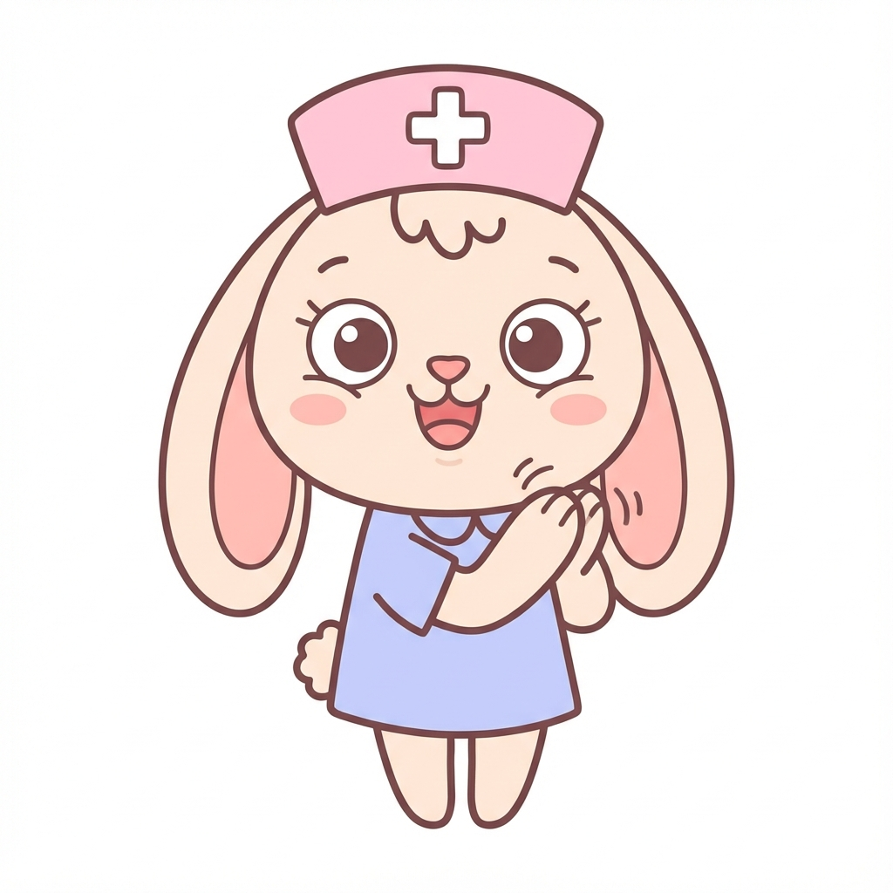

ぱっくんスタンプ
〜お子様の「お薬飲めた！」を楽しく応援〜
はじめに
このアプリは、お子様の服薬をサポートする保護者の方のために作られました。
単なる記録ツールではなく、お子様を褒め、励まし、一緒に達成感を味わうためのコミュニケーションツールです。

1. 基本的な使い方
1
設定をする
服用回数と期間を入力してスタート！
2
スタンプ！
飲んだら光る枠をタップしてスタンプ！
3
表彰状
全部たまったら表彰状がもらえます。
✨ 保護者の方へ
小さな成功を祝う: 苦いお薬を一口飲めただけでも、それは大きな成功です。最高のお祝いタイムにしましょう。
親の笑顔が最大のご褒美: 「頑張ったね！」という笑顔が、お子様の「次も頑張ろう」という意欲を育てます。
焦らずゆっくり: もし吐き出してしまっても大丈夫。時間を空けて、お子様のペースで再チャレンジしましょう。
3. 安心・便利な機能
- ✅ 飲みすぎ防止 (Time Lock):
- 1日3回なら4時間、2回なら6時間の間隔が必要です。
- 4回以上の場合は1時間間隔で押せます。
- 翌朝ロック: 1日の最後の薬を飲んだ後は、翌朝6時まで次は押せません。
- ✅ スキップ機能（飲み忘れ対応）:
- 時間が経過していても、連続してスタンプは押せません（必ず待ち時間が発生します）。
- その代わり、飲み忘れた分を「スキップ」して、現在の分を記録することができます。
- ✅ 記録の修正: 「Skip」した場所をタップすると、後から「飲んだ」ことに修正できます。
- ✅ テストモード: 設定画面でオンにすると、時間制限なしで動作確認ができます。
📱 アプリへのアクセスはこちら
このQRコードをスマホで読み取ると、すぐにアプリを使えます。

※このページを印刷して配布用にお使いください